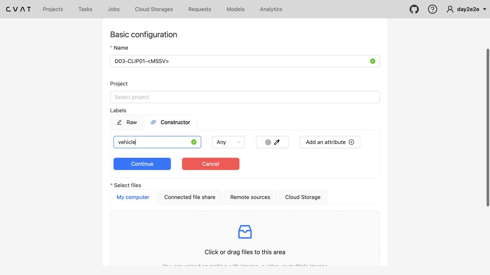
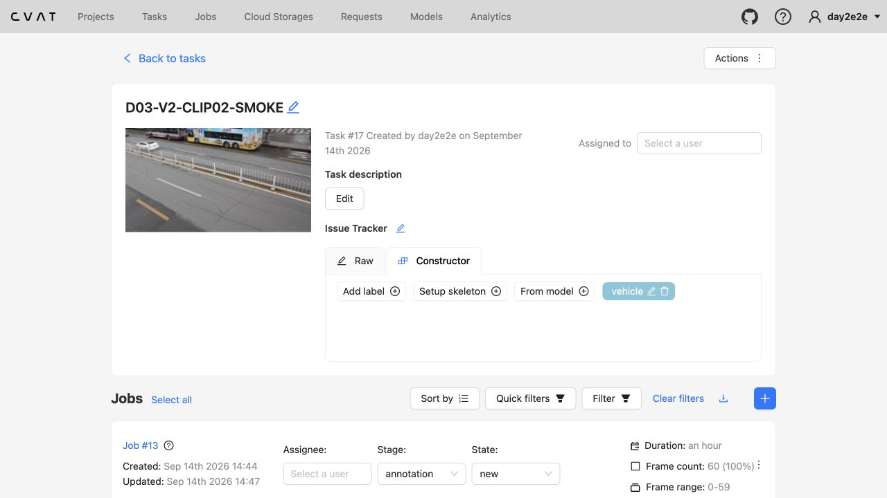
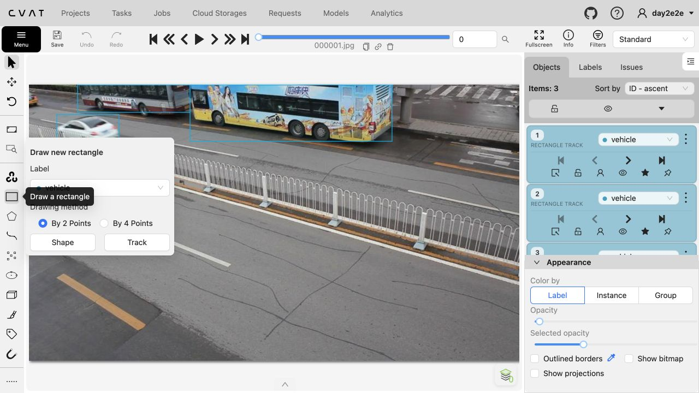
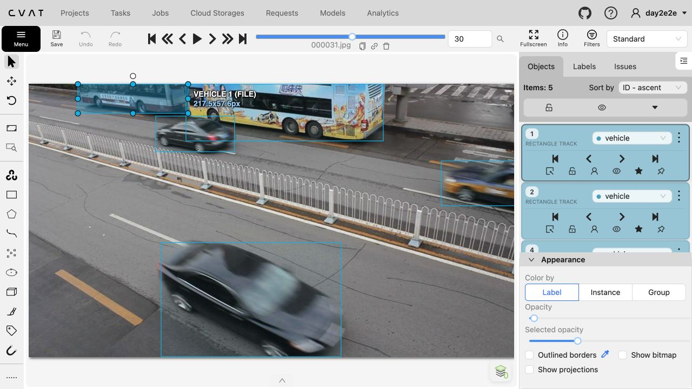
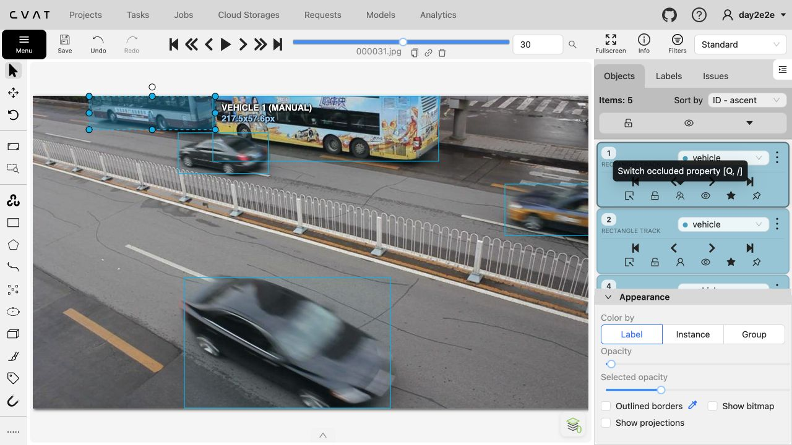
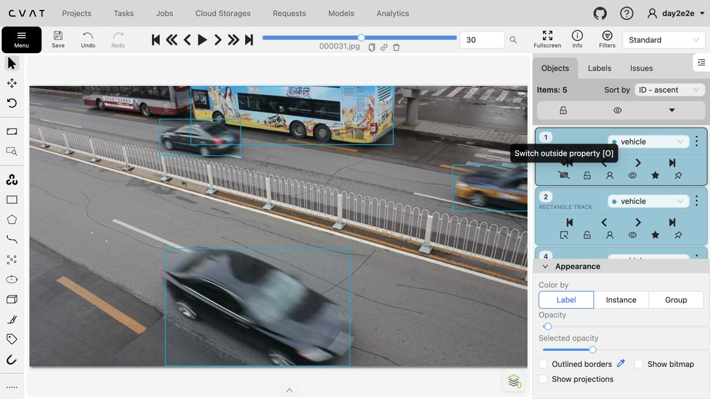
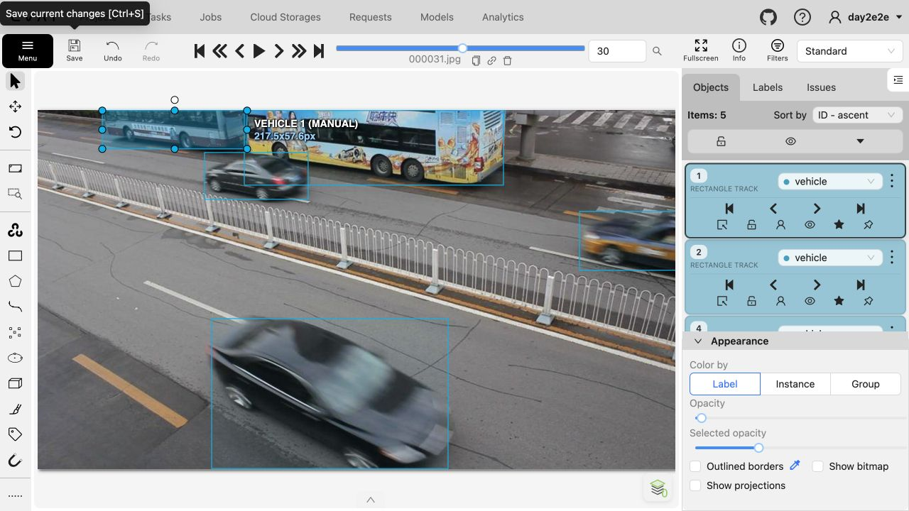
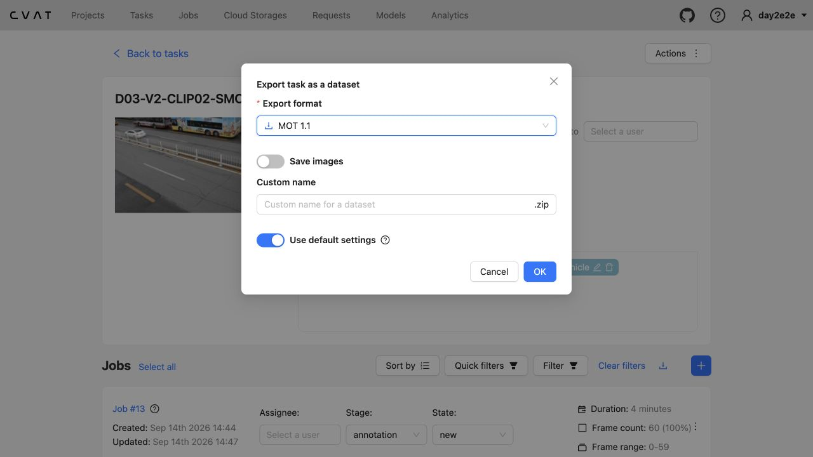
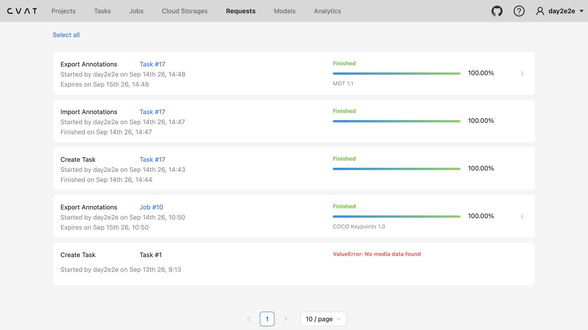
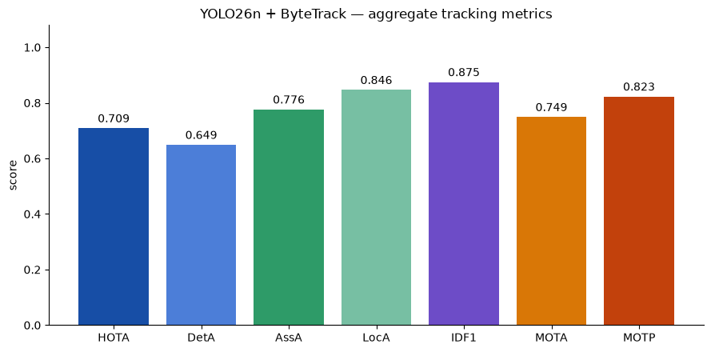

Ba mức hỗ trợ
Non-tech: từng bước. Kinh nghiệm: core tự chủ. Xong sớm: stretch sau core. Cùng rubric.
CVAT → MOT → QC → LOCK → EVAL → MODEL
Hướng dẫn thao tác thật từ 60 JPEG warm-up đến bản nộp có bằng chứng trước và sau sửa.
0–15 PHÚT · STOP GATE
Core không yêu cầu viết code. Sai một mục dưới đây thì dừng và báo Lab Coach.
XEM TRƯỚC KHI VẼ
Xem một lượt, chỉ ra xe vào/ra, đoạn che khuất và nơi hai xe cắt nhau.
Gán độc lập; phải có ca occlusion và entry/exit. Số track teaching reference chỉ mở sau pre-gold lock.
Non-tech: từng bước. Kinh nghiệm: core tự chủ. Xong sớm: stretch sau core. Cùng rubric.
240 PHÚT · CÓ NGHỈ 10 PHÚT
Warm-up bắt lỗi công cụ. Lock giữ tính độc lập. Model luôn chạy cuối.
Task, schema, Track.
60 frame, export.
Identity trước.
Save, reload, rời màn hình.
Outside, midpoint.
3 lượt, frame–ID–fix.
Snapshot + SHA-256.
Before/after.
ByteTrack vs appearance.
Không placeholder.
Commit cuối.
CVAT E2E · ẢNH CHỤP THAO TÁC THẬT
Ảnh được chụp từ local CVAT 2.74.1 và task smoke 60 frame. Bấm ảnh để phóng to; luôn có nút quay lại.
D03-CLIP02-<MSSV> cho warm-up.vehicle → Continue.img1/.gt.txt.000001.jpg.
vehicle.seqinfo.ini và số JPEG trước khi vẽ.
vehicle.

Q.
O.
Ctrl+S.
gt/gt.txt vào annotations/clip_0X/gt.txt.

Ghi nhận thực tế: importer CVAT 2.74.1 không nhận frameRate=12.5 trong seqinfo.ini; export MOT 1.1 từ task vẫn hoàn tất đúng.
WORKED DIAGNOSIS · FRAME THẬT
Dùng frame 31 của task smoke để đọc control và identity. Các ví dụ sai là triệu chứng cần tìm, không phải đáp án core clip.
ID trước/sau che giống nhau; dùng Occluded, không tạo ID mới.
Mở control thậtSố trên cùng xe đổi sau crossing. Quay về frame cuối đúng và sửa/merge track.
Mở frame nhiều xeFrame cuối còn xe có bbox; frame kế dùng Outside.
Mở Outside thậtHai đầu khít nhưng midpoint trượt. Thêm keyframe quanh midpoint.
Mở keyframe thậtGhi frame, ID, lỗi, thao tác sửa và closure. Lưu visualization cùng frame khi cần.
Mở bảng findingCVAT UI hiển thị 0–59; MOT dùng 1–60. Ghi cả hai khi có thể nhầm.
135–155 PHÚT
Mỗi lượt chỉ tìm một loại lỗi để giảm tải nhận thức.
| MOT frame | ID | Lỗi | Evidence | Fix | Closure |
|---|---|---|---|---|---|
| 31 | 4 | bbox drift | midpoint lệch khỏi phần nhìn thấy | thêm keyframe trước/sau | fixed |
COPY · PASTE · ĐỌC OUTPUT
Chạy từ thư mục gốc repo. PASS không chứng minh annotation đúng semantic; vẫn phải xem bằng mắt.
python3 tools/check_mot_labels.py \
--clip data/clips/clip_01 \
--tracks annotations/clip_01/gt.txtPASS ĐẠT phần định dạng: 0 lỗi.
WARNING Đọc từng cảnh báo và kiểm bằng mắt.
FAIL KHÔNG ĐẠT: sửa mọi LỖI rồi chạy lại.
python3 -m pip install pillow
python3 tools/visualize_tracks.py \
--clip data/clips/clip_01 \
--tracks annotations/clip_01/gt.txt \
--out outputs/vis_clip_01PASS outputs/vis_clip_01/ có ảnh bbox + ID.
WARNING ID đổi ở crossing: quay lại CVAT sửa identity.
FAIL No module named PIL: cài Pillow rồi chạy lại.
python3 tools/lock_pre_gold.pyPASS Thấy ĐÃ KHÓA PRE-GOLD, manifest và SHA-256.
WARNING Gửi hash cho coach, chưa mở reference/model.
FAIL Không xóa evidence; báo coach.
# Trước rework: snapshot đã khóa
python3 tools/evaluate_tracking.py \
--pred evidence/pre-gold/clip_01/gt.txt \
--gt gold/clip_01/gt.txt \
--seqinfo data/clips/clip_01/seqinfo.ini \
--output outputs/eval_pre_gold.json
# Sau rework: annotation cuối
python3 tools/evaluate_tracking.py \
--pred annotations/clip_01/gt.txt \
--gt gold/clip_01/gt.txt \
--seqinfo data/clips/clip_01/seqinfo.ini \
--output outputs/eval_vs_gold.jsonPASS IDF1 ≥ .80, MOTA ≥ .75, MOTP ≥ .70.
WARNING MOTA cao, IDF1 thấp: ưu tiên ID switch/fragmentation.
FAIL Thiếu gold/clip_01/gt.txt: chưa được phát hoặc đặt sai chỗ.
python3 -m pip install "ultralytics==8.4.145" "lap==0.5.13"
# Control: motion + IoU
python3 tools/run_tracker.py \
--clip data/clips/clip_01 \
--model yolo26n.pt \
--tracker bytetrack.yaml \
--out outputs/model_bytetrack_clip_01.txt
# Treatment: appearance/ReID, cùng detector input
python3 tools/run_tracker.py \
--clip data/clips/clip_01 \
--model yolo26n.pt \
--tracker configs/trackers/botsort-reid.yaml \
--out outputs/model_reid_clip_01.txtPASS Có hai file MOT, mỗi file có dòng dữ liệu.
WARNING ReID thêm compute; CPU chậm nhưng hợp lệ.
FAIL Treatment lỗi: kiểm configs/trackers/botsort-reid.yaml, rồi dùng notebook route bên dưới.
for path in \
annotations/clip_01/gt.txt \
annotations/clip_02/gt.txt \
evidence/pre-gold/clip_01/manifest.json \
reports/review_partner.md \
reports/REPORT.md \
outputs/model_bytetrack_clip_01.txt \
outputs/model_reid_clip_01.txt \
outputs/model_run_config.json; do
test -s "$path" && echo "PASS $path" || echo "FAIL $path"
done
if git ls-files | grep -Eq '^(gold/|outputs/vis_)|\.pt$'; then
echo "FAIL: đang track gold, visualization hoặc weights"
else
echo "PASS: không track gold/weights/visualization"
fiPASS Artifact lines PASS và leak check PASS.
WARNING git status --short còn file đúng phạm vi: add trước commit.
FAIL File rỗng/thiếu hoặc gold/weights đang track.
HIỂU TRONG 3 PHÚT · TRƯỚC KHI MỞ NOTEBOOK
Không cần biết code để hiểu phần này. Hãy nhìn một xe xanh bị xe buýt che: khi nó xuất hiện lại, tracker phải quyết định đó là xe cũ hay một xe mới.
Tracker thấy xe xanh và gán tạm track_id, ví dụ ID 4.
Xe biến mất sau xe buýt. Tracker chỉ có vị trí và hướng đi dự đoán.
Nó phải chọn: tiếp tục ID 4, hay tạo ID mới / gán nhầm ID xe xám?
Không phải biển số hay danh tính thật. Một xe giữ cùng ID càng lâu càng tốt.
Nó hỏi: xe cũ dự đoán đang ở đâu, box mới có nằm gần/chồng lên không?
Nó biến crop xe thành đặc trưng hình ảnh rồi hỏi: xe vừa hiện lại có giống xe ID 4 không?
Cùng một xe đang ID 4, sau đoạn che lại thành ID 9 — bbox có thể vẫn đúng nhưng identity sai.
ĐỌC METRIC KHÔNG CẦN CÔNG THỨC
Đừng chỉ xem một con số hoặc chọn model có điểm cao hơn.
195–225 PHÚT · NOTEBOOK THẬT
Notebook có cell tuần tự. Học viên chỉ cấu hình đường dẫn rồi chạy, không phải viết pipeline.
Colab → File → Upload notebook → chọn file notebook từ repo.
Đọc ReID theory; không copy cell rời sang notebook mới.Runtime → Change runtime type → T4 GPU nếu còn quota. Không có GPU thì giữ CPU.
Config phải ghi device thực tế.Cell 3: sửa REPO_URL thành learner repo mà Colab đọc được.
ROOT = .../Day3-Lab. Không dán token vào cell.Cell 4 cài ultralytics==8.4.145 và lap==0.5.13.
Cell 6 phải thấy 190 frame. Nhãn của bạn vào annotations/clip_01/gt.txt; reference từ coach vào gold/clip_01/gt.txt.
Chạy cell config: ByteTrack control, rồi BoT-SORT + ReID với cùng detector input.
PASS cómodel_bytetrack..., model_reid... và config.Chạy cell evaluation/chart/worst frames theo thứ tự.
Đọc IDF1, AssA, IDSW trước; không coi model nào là gold.Đưa file từ outputs/ về repo local rồi chạy submission check.
RUN_EXPERIMENT=False nếu chưa xong.
TWO-RUN SYSTEM COMPARISON · SAME DETECTOR INPUT
Ảnh là evidence baseline thật. Notebook chạy ByteTrack và BoT-SORT + ReID riêng, rồi yêu cầu frame/ID giải thích thay vì hứa treatment luôn thắng.
Giữ clip, weights, conf, IoU, imgsz và classes. ByteTrack/BOT-SORT khác implementation, nên đây không cô lập ReID là nguyên nhân.
RECOVERY NHANH
Giữ nguyên thông báo lỗi khi báo coach. Không tự sửa MOT bằng tay để qua validator.
| Triệu chứng | Kiểm nhanh | Cách hồi phục |
|---|---|---|
| CVAT không mở | Đúng URL? Local Docker đang chạy? | Mở CVAT setup; dùng fallback coach công bố. |
| RECTANGLE SHAPE | Đã bấm Shape. | Xóa shape, vẽ lại Rectangle → Track. |
| Ảnh bị pan | Bbox chưa active. | Click trực tiếp bbox, thấy handle rồi kéo. |
| Reload mất nhãn | Ctrl+S không nhận focus. | Dùng Save icon; nếu mất, dừng và báo task/job ID. |
| Không có gt/gt.txt | Export nhầm format. | Task → Actions → Export task dataset → MOT 1.1. |
| Validator báo frame 0 | CVAT là 0-based, MOT là 1-based. | Export lại MOT 1.1; không cộng tay frame. |
| IDF1 thấp, MOTA cao | Lỗi identity bị MOTA phạt nhẹ. | Soi ID switch/fragmentation; merge/sửa identity. |
| Notebook không thấy repo | Cell 3 chưa in ROOT. | Sửa REPO_URL hoặc upload thư mục Day3-Lab, chạy lại cell 3. |
| Restart/thiếu package | Cell 4 chưa in đúng version. | Run install, restart nếu được yêu cầu, chạy lại cell 3. |
| Không GPU | Config ghi device: cpu. | Tiếp tục CPU, giữ imgsz; GPU không là điều kiện core. |
225–240 PHÚT
Đánh dấu sau khi file tồn tại và không còn placeholder.